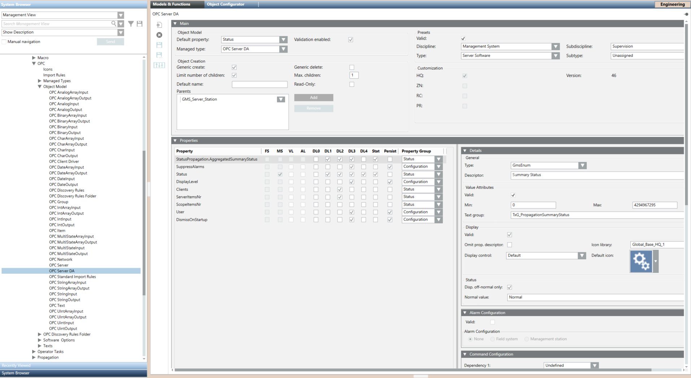

OPC DA Server Library
To support OPC DA connectivity in a Desigo CC system, the OPC library is required. It includes the data structures (OPC data models) for the OPC connectivity.
Location of the OPC Library
The standard OPC library that supports the OPC data models is located in Management View of System Browser at the following path: Project > System Settings >Libraries > L1-Headquarter > Global > OPC.
OPC DA Server Object Model
The OPC Server DA object model is available in the OPC library and supports the OPC DA server connectivity.
The OPC object model is located under the OPC library: OPC > Object Models> OPC Server DA.

Properties | |
Property | Description |
Status.Propagation.Aggregator | Common for all the points visible in System Browser. |
SuppressAlarms | Common for all the points visible in System Browser. This is relevant to the alarm suppression feature. |
Status | OPC DA server operational status. |
DisplayLevel | Display level of the exposed OPC items. |
Clients | Number of third-party OPC clients currently connected to the Desigo CC OPC DA server. The OPC DA server updates this value each time a third-party OPC client connects or disconnects. |
ServerItemsNr | Number of OPC items managed by the Desigo CC OPC DA server. The value updates any time the OPC server starts. |
ScopeItemsNr | Number of OPC items present in the project depending on the OPC scope configuration, when a preview or export is carried out. |
User | OPC user. |
DismissOnStartup | Option to dismiss any running OPC DA server instance when the project is started. For details, see Troubleshooting OPC DA Server Invalid State When the Project is Stopped. |